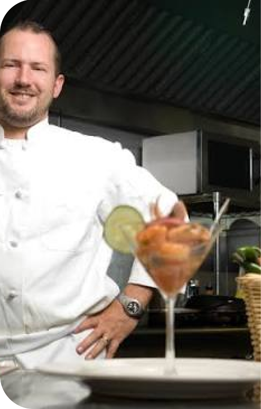
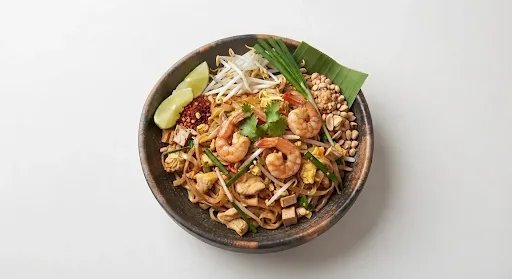
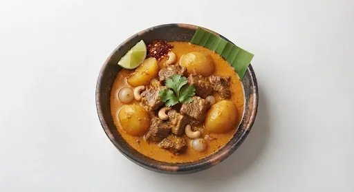
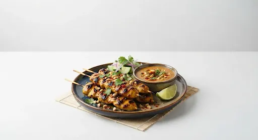

O ThaiDel nasceu como um pequeno projeto focado em trazer os sabores autênticos da Tailândia em pratos práticos e frescos. Hoje, a marca se consolidou como referência na gastronomia tailandesa, expandindo sua operação e entregando uma verdadeira viagem cultural com agilidade.
Atualmente, o ThaiDel consolidou-se como referência na culinária tailandesa por unir tradição e agilidade. A marca expandiu sua operação, otimizou as entregas e conquistou clientes através do uso de ingredientes selecionados, oferecendo uma verdadeira viagem cultural em cada prato.


sobre este prato
sobre este prato
sobre este pratoValorizamos o seu tempo e a sua fome. Nosso sistema calcula prazos reais para garantir que a sua refeição chegue direto da cozinha para a sua mesa, rápida e na temperatura ideal.
Comida feia ou fria? Aqui não. Garantimos que o seu pedido chegará quente, perfeito e exatamente como na foto, ou fazemos o reenvio imediato.
Todos os nossos pratos viajam com lacres de segurança invioláveis. Se o lacre estiver rompido, você não paga e nós mandamos outro.